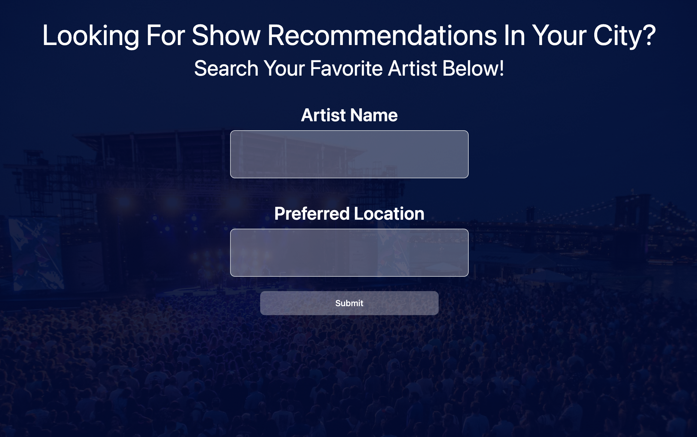

Projects
Refactoring a Website
In this project, I took an existing website and refractored it in order to make it more accessible.

Using Third Party API's
First Group Project where we made a website using multiple ser-side API's
Running Achievements
First Group Project

Past Achievements
Before I was a programmer, I had an avid running career, check out some of the highlights